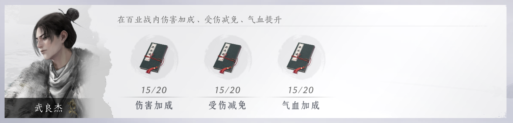
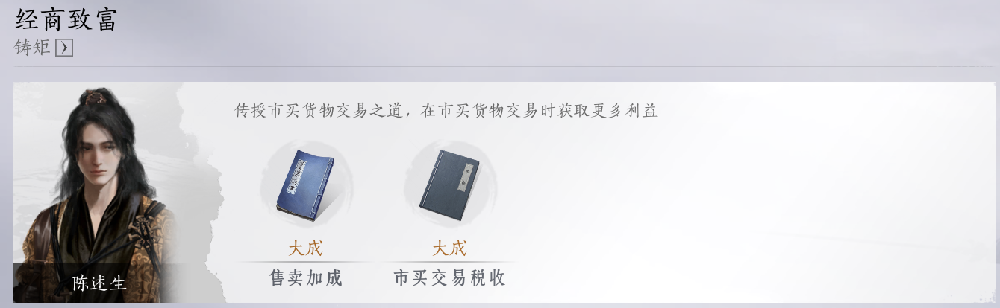
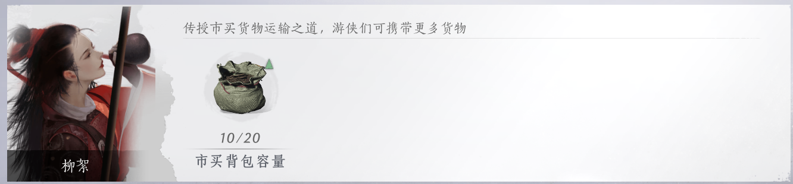
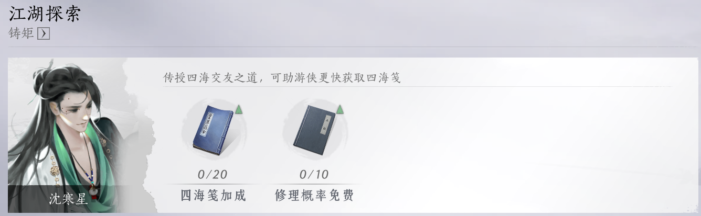

02
百業技藝 - 加成攻略
加入百業其中一個重要福利就是百業技藝，可以讓你在燕云戰斗和探索時更加輕松。千奇玨主要通過完成百業活動獲得，活動完成的狀態會每周刷新，千奇玨每周獲得無上限。注意，每個賽季玩家累計的千奇玨會重置，但是燕云會根據你上個賽季累計的千奇玨通過郵件形式返還。也就是說，累計越多，就是能解鎖越多。
辛辛苦苦獲得了很多千奇玨不知道怎么用？以下的攻略給你一個快速指南作為參考：
百業戰技能
哪怕你不參加百業戰，也建議優先點亮以下技能到至少5級，能夠給全百業提供百業戰的加成（協力共助）：
基礎的傷害，受傷減免，氣血加成。所有參與百業戰的成員請優先點滿。不參與百業戰的也請盡量升滿。

屬攻加成。參與百業戰的成員優先加滿自己的武學流派方向，其次可以詢問百業指揮。不參與的成員盡量提升每項到5級以上。

根據百業戰站位分配點亮對應技能：

不參與百業戰的可以忽略以下部分。參與百業戰的盡量點滿自己武學對應的神技：


經商致富
需要在開封市買司跑商賺短陌錢的可以參考以下攻略：
售賣加成和稅收減免加滿。注意兩個perk只對在百業成員的世界賣貨的時候生效。世界其他玩家按照正常的價格和稅率。

市買背包容量升級到10級就可以了，在開封租最大的房子（60格）就可以滿足需求。

江湖探索
眾志凌霄（百業爬塔）：參與爬塔的成員請優先點滿。不參與的不需要點。

四海箋加成：如果經常單機自己玩，但是需要在江湖行商店買東西，缺四海箋，可以點亮四海箋加成。
一般不需要點裝備修理這個，除非你裝備真的爛得太快

其他
還有其他技藝本攻略沒有講述，大家可以根據自己的需要去提升。